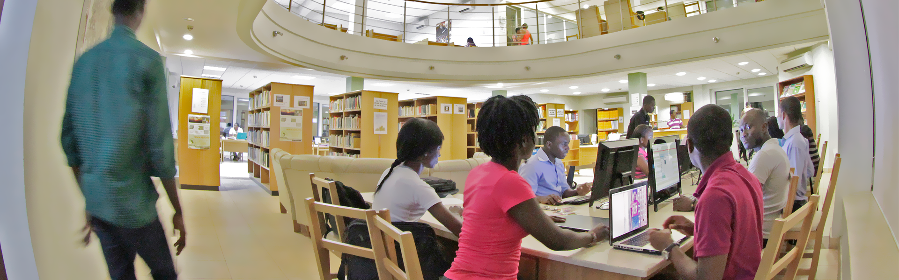
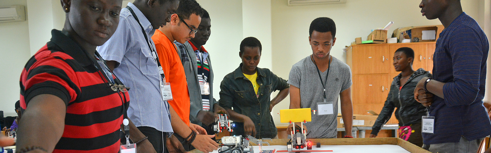

Ashesi's Library
Ashesi's library is primarily digital, with subscriptions to a number of electronic information resources, including the PERI databases which give access to over 30,000 scholarly journals. Ashesi's library is not limited to the library building; it reaches out, with cutting edge information, into faculty and administrative offices, classrooms, cafeterias, and even outdoor gathering spaces.
Ashesi's Engineering Department
Refresh
Ashesi's Engineering Department
The engineers tasked to solve society's problems need a broad range of skills that will allow them to tap into ideas beyond one engineering field; they have to be entrepreneurs who can see through challenges and find solutions within a local context. They must be ethical and responsible, and see the short and long term effects of their decisions on society and the environment. They also have to be leaders who can communicate their ideas and work with teams to solve problems.
Ashesi's Computer Science Department
Refresh

Ashesi's Computer Science Department
Ashesi's Computer Science programme focuses not only on software design and programming, but also on empowering young people to be at the forefront of African growth by harnessing the power of technology. Students in the Computer Science programme are taken through robust foundational courses that prepare them to engage new technologies, and create software tools for African needs.